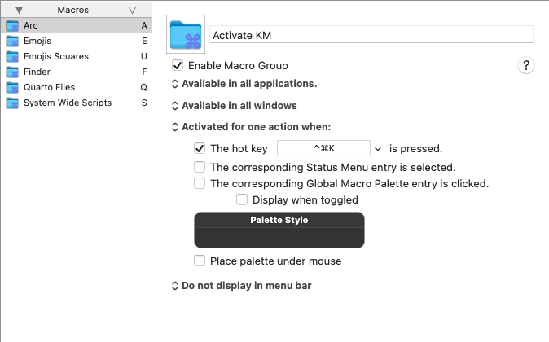

I am going to use this post to document 31 workflows for feeling good about day to day work at the computer, one for each day of October, hopefully! Most of this will be in the context of macOS, but hopefully the principles are adataptable to the platforms and tools of your choice.
Turns out I am terrible with remembering keyboard shorcuts, so in an ideal world I’d like to have things triggered by single key presses that are awfully predictably related to whatever I want. For example, hit the “b” key to type out a 🟦. Now this is not tenable of course: there are multiple things vying for the “b” trigger, including, well, the letter b wanting to be typed out.
A natural solution is to have a keystroke sequence for disambiguation. So in principle something like “e” followed by “b”, where the first “e” signals that they keyboard is to prepare itself for an emoji-based trigger, and the “b” does the blue square thing. However, pure key sequences are also going to get in your way, because most of them will be substrings of naturally typed text.
So you’d want a hot key trigger to say you’re going into shortcut mode first: something like Cmd+K → e → b. BTT supports such sequences out of the box, but Keyboard Maestro, my default tool for such matters, does not with the following explanation in their FAQ:
But Keyboard Maestro does not directly support assigning a two-keystroke hot key to a trigger. The problem with multiple keystroke triggers like Option-F R is what to do if you type Option-F A?
Logic dictates that the Option-F A should go through to the system unimpeded, but Option-F R should be swallowed entirely. But this is impossible. The only way to do it would be to swallow the Option-F key, and then swallow the second key and then resubmit the Option F and the second key unless it matches Option-F R.
However, that is fraught with peril and cannot work robustly in the presence of other applications placing things on the keyboard event queue (or even a sufficiently fast typist).
For example, suppose you quickly typed Option-F A B. Keyboard Maestro would have swallowed the Option F and then the A, and then resubmitted it to the event queue, resulting in the stream of characters B, Option-F, A. There is no way to avoid this race condition, and as such Keyboard Maestro does not support any such mechanism.
As described above, Keyboard Maestro has a variety of ways you can use Option-F as a hot key that allows a second key to be used to select a macro. However in all cases it is clear that the Option-F has been used and there is no concept that the Option-F might come back later to do something else.
However, as a tip from the same FAQ suggests, you can more or less achieve the desired effect by using macro grouping and group activation triggers. So I have a macro group that triggers the square emojis by single keystrokes like so:

…but this macro group is only activated for one action at a time, and its activation is triggered by another KM macro - whose only job is to activate this macro group for a single action, like so:

You might notice that this trigger is also a single keypress (in this example, “U”). This entire macro group is activated for one action with the Cmd+Alt+K keystroke. So effectively I only remember the Cmd+Alt+K keystroke, which activates this collection of macros for one action:

…and from here I just have to press “U” followed by “B” to get my 🟦. Just this two-level triggering gives access to potentially 500+ triggers that mneomically efficient, and potentially many more actions (for example, you could map “B” to a bunch of different emojis that share blue as the predominant color, and KM will display a pallette for you to do the final disamiguiation).
IRL I use Rocket by Matthew Palmer to pick out emojis quickly (thanks to a tip from Wes Bos), or just the built-in macOS picker. But I do find the setup described above handy for some unicode symbols that I frequently use.
I should mention God Mode as another popular way to reduce clutter in the keyboard shortcut mindspace, but I never really got used to Karabiner and am too used to the left CAPS key being mapped to Ctrl for me to give that up to the hyper key.